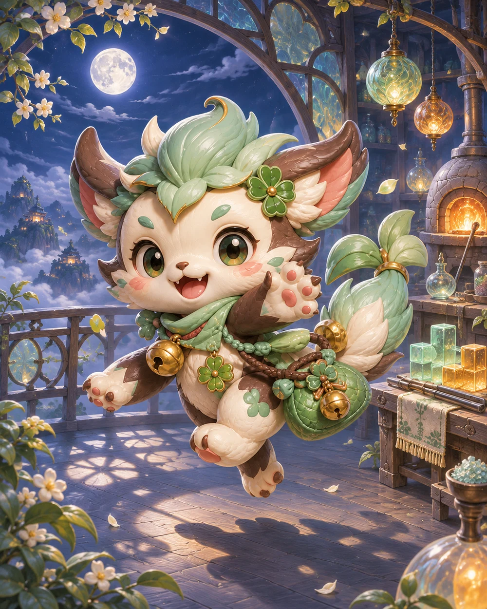
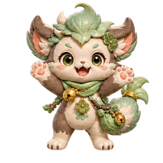

機台 01 · 落下方塊
心境織境
排列落下的方塊，織成一條又一條完整的線。
移動與旋轉方塊，填滿一整行即可消除。
鍵盤 ← → 移動，↑ 旋轉，↓ 下降，空白落下，C 保留。
開啟角色冒險後，每消除四行可使用一次角色祝福。

機台 01 · 落下方塊
排列落下的方塊，織成一條又一條完整的線。
移動與旋轉方塊，填滿一整行即可消除。
鍵盤 ← → 移動，↑ 旋轉，↓ 下降，空白落下，C 保留。
開啟角色冒險後，每消除四行可使用一次角色祝福。

旅程結算